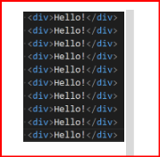
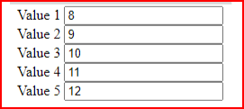
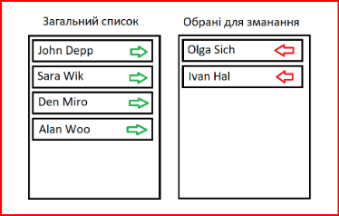

Дано 10 рядків тексту «Hello!» у окремих div. При кліку на якийсь із них усі наступні повинні бути зафарбовані у червоний колір.
Дано 5 елементів input. При введенні значення у якийсь із них необхідно автоматично заповнювати інші (усі попередні у спадному порядку(кожен попередній має значення на 1 менше за наступний), усі наступні на 1 більше (кожен наступне на 1 більше за попереднього)
Дано 5 випадковим чином згенерованих нумерованих списків з рандомними числами (кількість елементів у списку випадкова від 1 до 10, елементи випадкові – від 1 до 100). При натисненні на кнопку нумеровані списки з парною кількістю елементів зафарбувати у зелений колір, інші у червоний.
Дано 3 таблиці розмірності 3*3 з випадковими числами. Якщо відбувається клік на якійсь із клітинок, то до відповідної таблиці додається червона рамка (спробуйте додати можливість відображення кількості кліків біля назви таблиці з використанням відповідно доданого для цього атрибута).
Відображаємо картки товарів, які користувач може вибирати. Вибраний товар має зелену рамку (при кліку робити toogle з класом вибраного елемента)
Дано список спортсменів. Потрібно сформувати список тих, які будуть брати участь у змаганні. При цьому є два стовпці. В одному відображені всі спортсмени, в іншому – список тих, хто був вибраний. При натисканні на зелену стрілку спортсмен переміщається у список для змагань. При натисканні на червону стрілку спортсмен переміщається у загальний список.
Задача 1. Відобразити падаючий сніг. Сніжинка з’являється у верхній частині екрану (top =0) і з випадковою швидкістю рухається вниз (у setInterval викликати метод, у якому додавати крок до top). Як тільки сніжинка досягає нижньої частини екрану (top>maxTop) вона знову повинна з’явитись у верхній частині екрану (top=0).